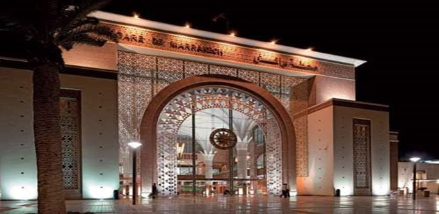
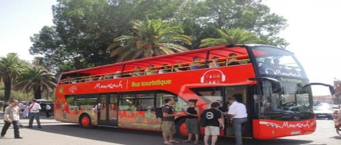
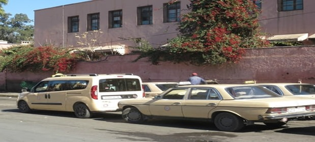
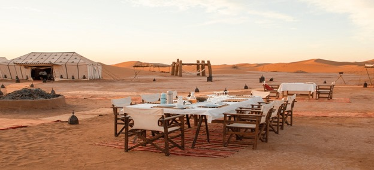
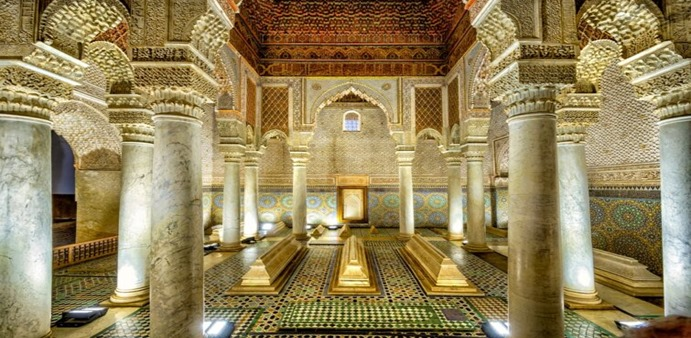

Tourisme dentaire
VOYAGE ET TOURISME DENTAIRE AU MAROC (MARRAKECH)
- Les bons plans pour voyager et se faire soigner moins cher
- Comment venir à Marrakech ?
- Organiser mon tourisme dentaire à Marrakech
- Les étapes pour votre rendez-vous dentaire
- Un séjour touristique mais aussi pour vos dents
Vous avez choisi de vous faire soigner au Maroc pour profiter d’un service de qualité à prix
cassés, alors nous allons vous donner quelques astuces pour vous aider à préparer votre voyage
dentaire.
Vous pourrez ainsi allier l’utile à l’agréable en passant un séjour touristique agréable qui vous
permettra de découvrir l’une des plus belles villes du Maroc.
Pour commencer, sachez que nous disposons d’une équipe spécialement dédiée à l’accueil des patients.
Il vous suffit donc de nous contacter, par téléphone ou par Email, pour recevoir une réponse rapide
à vos questions sur le traitement, nos tarifs, les possibilités d’hébergement, ou sur l’organisation
de votre voyage de tourisme dentaire.
Notre équipe reste d’ailleurs à votre disposition pour vous aider à réserver votre logement à
Marrakech.
Nous pouvons vous proposer un large choix de logements différents, de la chambre d’hôtel adapté à
vos besoins jusqu’à l’appartement meublé qui vous permettra de vous reposer en vous sentant comme à
la maison.
Notre Centre EMPIRE peut vous aider à trouver les meilleurs soins et traitements dentaires pour vous et votre famille, faisant de votre voyage au Maroc une expérience luxueuse.
Le tourisme dentaire à Marrakech depuis quelques années s'est alors étoffé pour vous proposer des soins dentaires de qualité tout en vous faisant découvrir la culture marocaine et ses spécialités gastronomiques.
Vos soins dentaires au Maroc chez Empire
Lors de votre premier rendez-vous, notre spécialiste réalisera une radio panoramique de votre mâchoire et vous proposera un plan de traitement détaillé. Vous pourrez ainsi comparer nos services et nos tarifs en détail et avoir une idée très précise du montant global de votre facture.
Évidemment, nous pouvons vous fournir un premier devis sans que vous ayez besoin de vous déplacer. Il vous suffit de nous faire parvenir votre dossier (radio panoramique, devis…) pour que nous réalisions une première étude, qui vous permettra de vérifier la compétitivité de nos tarifs. N’hésitez donc pas à nous contacter dès maintenant.
Comment organiser mon tourisme dentaire à Marrakech ?
Une fois que vous aurez contacté le centre dentaire pour prendre votre premier rendez-vous, notre équipe sera à votre disposition pour vous aider à organiser votre voyage et votre séjour dentaire, mais aussi votre séjour touristique.
Nous prendrons en charge vos déplacements de l’aéroport au centre dentaire, nous pouvons vous aider à trouver un hébergement adapté, mais nous pouvons aussi aider à organiser votre séjour touristique dans la ville de Marrakech.
Les différentes étapes à suivre pour réserver votre rendez-vous dentaire à Marrakech.
Avant de contacter le centre dentaire Empire, il est important que vous vérifiiez les tarifs des vols pour Marrakech. Une fois que vous aurez trouvé le meilleur prix, contactez le centre pour savoir si un de nos spécialistes est disponible à la date que vous aurez choisie.
Après avoir obtenu cette confirmation, vous pourrez réserver votre billet d’avion et envoyer une copie de la réservation au centre afin de confirmer votre rendez-vous dentaire.
Déroulement type d’un séjour de soin dentaire
La pose d’implant dentaire à Marrakech s’effectue généralement en deux ou trois séjours, en fonction de votre cas particulier.
Le premier séjour, d’une durée de 3 ou 4 jours, va permettre de mettre en place l’éventuelle greffe osseuse et de poser les implants dentaires. Suite à cette première intervention, il faudra laisser votre organisme le temps d’assimiler l’implant dentaire pour qu’il s’intègre correctement dans l’os de la mâchoire. Cette période de cicatrisation s’étale généralement sur 3 ou 4 mois.
Le deuxième séjour, d’une durée de 8 à 10 jours va permettre de libérer les implants, d’y insérer une vis gingivale, de prendre les empreintes de la mâchoire, de réaliser les couronnes et de les poser sur les implants.
Le troisième séjour sera nécessaire que si les implants ne peuvent pas être posé en même temps que la greffe osseuse. Dans ce cas, vous devrez faire un séjour supplémentaire, afin de laisser le temps à la greffe d’être assimiler par la mâchoire, avant d’y poser le ou les implants.
Trouver un hébergement sur place
La ville de Marrakech propose un large choix d’hébergement adapter à la plupart des préférences. Des hôtels, des maisons d’hôtes, des appartements meublés, des riades.
Les déplacements à Marrakech : comment se déplacer ?
Marrakech attire toujours autant de voyageurs chaque année mais les infrastructures pour se déplacer tardent à se développer. On se pose donc souvent la question de savoir comment rejoindre Marrakech depuis l’aéroport ou comment se déplacer dans la médina. Voici notre guide récapitulatif sur les transports à Marrakech.Comment rejoindre Marrakech depuis l’aéroport ?Voilà tous les moyens de transports détaillés pour quitter l’aéroport de Marrakech Menara
L’aéroport Menara de Marrakech
Prendre le bus, solution économique
Situé à seulement 10 km de la médina, l’aéroport de Marrakech Menara est facilement accessible avec le bus n°19
La ligne de bus n°19 qui vous amène à la place Jemaa el Fna
Prendre le taxi depuis l’aéroport de Marrakech
La solution de facilitée mais pas forcément la plus tranquille. Quand vous sortirez de l’aéroport vous allez être harcelé par les taxis. Choisissez plutôt les officiels qui se trouvent à côté de la station de bus n°19. Et il faut négocier le tarif demandé, ça fait partie du folklore local.
Prix : de 50 à 70 Dh pour se rendre à la place Jemaa el Fna
Les taxis attendent à la sortie du terminal.
Arriver à Marrakech en train
Le train vous déposera dans le quartier de Gueliz. De ce quartier, il faut prendre le bus n°10 ou le taxi depuis la gare. Cout : 4 Dh en bus / 30 Dh en taxi
La gare de Marrakech pour arriver en train
Se déplacer dans Marrakech en bus
Si vous aimez voyager local, prenez le bus. Ils desservent bien la ville grâce à une trentaine de lignes de bus. Le coût du ticket est dérisoire (5 Dh). Vous pouvez opter également pour les bus touristiques rouge avec audioguides :
C’est une solution intéressante pour visiter à votre rythme sans vous fatiguer. Sur une semaine de vacances, c’est pas mal de se faire une journée en bus touristique pour voir ou revoir l’essentiel de Marrakech.
Le bus touristique permet de visiter sans se soucier du parcours
Louer une voiture à Marrakech
Si vous aimez les embouteillages, la circulation il va falloir faire avec ! Difficile de circuler dans les rues de Marrakech là où on trouve déjà des piétons, des vélos, camions, calèches… La location de voiture reste très utile si vous souhaitez sortir de la ville et voir les incontournables de la région. Le seul souci est de trouver la bonne agence tellement l’offre est conséquente. On en trouve à chaque coin de rue.
Vérifiez bien l’état du véhicule avant de partir et pensez à réserver depuis internet (ça évite les frais d’agences). Comptez environ 400 Dh pour une journée de location de voiture classe A. La location d’un 4×4 n’est pas indispensable et n’oubliez pas que votre assurance de carte de crédit ne couvre pas pour une location de ce type de véhicule !
Utiliser le vélo
Pourquoi pas ? Mais pas pour nous, je trouve ce mode de transport plutôt dangereux à Marrakech même si beaucoup l’utilise. La journée de location est d’environ 100 Dh.
Apied
Le moyen le plus économique pour visiter Marrakech reste la marche à pied mais n’oubliez pas qu’en plein été, cela peut vite devenir un cauchemar tellement il fait chaud. On se repère facilement grâce à la Koutoubia. A pied vous serez également souvent sollicité par les taxis désireux de vous prendre. Lors de notre visite de Marrakech, nous avons tout fait à pied!
La grande place Jemaa el Fna se visite à pied
De toute façon vous serez obligés de vous déplacer à pied dans le souk de Marrakech.
Prendre le taxi
On n’échappe pas aux taxis à Marrakech, ils sont partout (couleur beige) et viendront vous solliciter régulièrement. Comme dans tous taxis, ils possèdent un compteur qu’ils ne veulent souvent pas mettre préférant proposer un prix. Il vaut mieux refuser car c’est beaucoup plus avantageux d’avoir le compteur. A noter que quel que soit la distance parcourue, le montant minimum de la course sera de 7 Dh.
Le prix pour aller de la Médina à la Palmeraie en taxi varie entre 25 à 40 Dirhams. En général, le prix moyen d’une course en taxi à Marrakech entre différents quartiers tourne autour de 30 Dirhams. Pensez à bien demander le compteur !
Les taxis officiels sont beiges
Se déplacer en calèche à Marrakech
A faire au moins une fois pendant son séjour, c’est typique de MarrakechOn en trouve tout au autour de la place Jemaa el Fna. Le tarif est de 10€ par personne pour 1h30 de parcours. N’hésitez pas à négocier son tarif surtout si vous êtes plusieurs à monter et refuser de vous arrêter devant les boutiques…
Vous pouvez réserver cette sortie en avance pour éviter tout marchandage une fois sur place :
La calèche reste un moyen de transport local pour se déplacer dans Marrakech
Un séjour touristique mais aussi pour vos dents
La ville de Marrakech propose un large choix d’activités, d’établissements et de lieux culturels.Vous pourrez donc facilement y organiser un séjour sur mesure qui correspondra à vos envies
De nombreux lieux touristique calme et abondant se trouve dans la ville comme les plus populaires Jemaa el-Fna, Koutoubia. Les jardins Majorelle que vous pourrez apercevoir si vous vous trouvez dans notre centre dentaire pour lier l'utile à l'agréable.
Après un traitement dans notre centre, vous pourrez profiter des thermes à différents points de la ville pour vous reposer après vos soins bien mérité et ainsi profiter au mieux de votre séjour.
Vous pouvez aussi déguster les spécialités marocaines comme les tajines,le couscous, la tanjia , les briouates, la pastilla ou autres digestifs.
Prévoyez votre séjour dentaire à Marrakech
Vous souhaitez faire du tourisme dentaire marocain pour profiter de soins dentaires qualité à prix bas ? Alors vous allez devoir commencer sélectionner votre centre dentaire qui s’occupera de vos soins, mais vous ne devez pas non plus de préparer votre séjour touristique qui fait évidemment parti de votre voyage.
Il est en effet impératif que vous preniez le temps de vous détendre entre vos séances de soins et que vous arriviez à profiter de votre séjour pour faire réellement du tourisme dentaire marocain.
Destination animée et passionnante, Marrakech offre un mélange parfait de culture, de paysages magnifiques, et une architecture fascinante. Celle qu’on surnomme « La Perle du Sud » ou encore « La Ville Rouge », bien qu’on la dise défigurée par le tourisme de masse, possède une myriade de lieux d’intérêt qui ne vous feront pas hésiter deux fois lorsque vous devrez prendre vos billets d’avion pour visiter Marrakech. Nous allons donc vous aider à préparer votre séjour en vous présentant les choses que vous devez absolument faire et voir à Marrakech. Suivez le guide !
La Palmeraie de Marrakech compte plus de 100.000 arbres sur environ 15.000 hectares, principalement des palmiers ainsi qu’une production de dattes et un potager. C’est un patrimoine naturel et touristique très connu au Maroc que vous devez absolument faire si vous venez visiter Marrakech.
La manière la plus ludique de visiter la Palmeraie de Marrakech est lors d’une balade à dos de chameau ou encore en randonnée en quad ! Ces deux moyens de locomotion vous permettront d’être témoins de paysages à couper le souffle et de découvrir la végétation luxuriante typique du Maroc.
Situées à environ 150 kilomètres de Marrakech, il est impossible de passer à côté des cascades d’Ouzoud si vous venez visiter Marrakech ! Considérées comme les plus belles et les plus hautes cascades du Maroc, vous pourrez alors vous y baigner, pique-niquer mais aussi faire la rencontre des singes locaux.
Visiter les Cascades d’Ouzoud permet de voir l’un des sites naturels les plus impressionnants de l’Atlas marocain. Visiter les Cascades d’Ouzoud vous garantit un festival de couleurs et promet un séjour inoubliable.
Jemaa el-Fna » est inscrit au patrimoine culturel immatériel depuis 2008 et au patrimoine mondial depuis 1985 par l’Unesco.
Si vous n’avez pas peur des bains de foule et que vous voulez goûter à la bonne ambiance de la ville, vous savez quoi faire à Marrakech. C’est aussi sur cette mythique place que vous aurez l’occasion de découvrir la divine gastronomie marocaine et ses spécialités.
Immanquable dans la nouvelle ville : le Jardin Majorelle, ce magnifique jardin botanique aux couleurs bleutées. Il a appartenu au créateur de mode Yves Saint Laurent. À sa mort en 2008, ses cendres ont été dispersées dans le jardin.
Faisant plus de 8 000 m² de superficie, le jardin tient son inspiration des oasis marocaines et des jardins islamiques de style mauresques. Véritable havre de paix, le jardin Majorelle vous offre un festival de couleurs vives où le bleu est à l’honneur.
Cœur historique de Marrakech, et inscrite au patrimoine mondial de l’Unesco, la Médina est l’endroit où vous devez aller si vous voulez visiter Marrakech et son côté historique et traditionnel !
Baladez-vous dans cette partie de la ville et ne manquez pas de visiter les nombreux monuments historiques qui s’y trouvent. N’hésitez donc pas à faire une excursion au palais de la Bahia ou encore à la mosquée de la Koutoubia.
Le désert de Zagora est l’un des endroits les plus fascinants du Maroc, un incontournable pour les amateurs de voyages et d’aventures. Fait de dunes de sable, de montagnes, de palmeraies et de villages berbères, on peut y pratiquer des randonnées à dos de chameau, des treks à travers les dunes ou encore rencontrées avec les populations locales.
En dormant dans un campement berbère traditionnel, on peut s’imprégner de l’atmosphère unique du désert et profiter du ciel étoilé d’un vrai désert.
Cependant, il est important de souligner que traverser le désert de Zagora sans guide local peut s’avérer compliqué, voire dangereux. Les agences de voyages locales peuvent organiser des circuits de toute durée adaptée aux envies des voyageurs, en tenant compte de leurs budgets

Comme nous nous le disions précédemment, impossible de visiter Marrakech sans découvrir ses magnifiques palais ! Ancien palais du XIXe siècle de huit hectares, le Palais de la Bahia est l’un des chefs-d’œuvre de l’architecture marocaine et de l’art islamique, un des monuments majeurs du patrimoine culturel du pays, et un des principaux lieux de tourisme au Maroc !
Que faire à Marrakech lorsqu’on a des enfants ou que l’on veut se baigner pour échapper à la chaleur écrasante de la ville ? Direction Oasiria Marrakech, bien sûr ! Il s’agit là du premier parc aquatique du Maroc où les petits comme les grands pourront profiter d’un moment d’amusement mais surtout de rafraichissement !
En plus d’en apprendre sur l’Histoire de Marrakech, une visite au Musée de Marrakech vous donnera l’occasion d’apprécier l’une des plus belles architectures de la ville. Installé dans le centre de Marrakech, c’est un incontournable à faire dans la ville rouge !
Le musée se trouve dans le Palais Dar Mnebhi qui a été construit à la fin du 19ème siècle et est un exemple parfait de l’architecture andalouse classique.
À quelques heures de voiture de Marrakech, la Vallée de l’Ourika dans le haut Atlas marocain est un véritable spectacle à voir. La température peut chuter, apportez donc un petit pull ou une veste et prenez vos meilleures chaussures de marche.
Le chemin dans la montagne est rocailleux, vous traverserez de petits ponts au-dessus des rivières qui s’écoulent sur les flancs de la montagne. La vue depuis les montagnes est superbe et vaut bien une excursion d’une journée.
Aller dans les souks est immanquable si vous visitez Marrakech. Les souks sont idéals pour faire une bonne affaire, mais vous devez être prêts à marchander pour obtenir un bon prix. C’est même attendu de votre part !
Vous y serez aussi ébloui par le festival de couleurs et d’odeurs entre les magnifiques tissus, les délicieuses épices et les céramiques qui s’y vendent. Profitez-en pour rapporter un souvenir à la maison pour ne jamais oublier vos somptueuses vacances à Marrakech.
Cette magnifique mosquée sunnite du XIIème siècle, dont le minaret surplombe les alentours, est un des incontournables à faire à Marrakech. Son architecture et son décor ascétique illustrent parfaitement l’art des Almohades ! Située à la Médina de Marrakech, la mosquée de la Koutoubia vous offre une parenthèse solennelle dans la ville rouge.
Attention toutefois à votre accoutrement, par respect pour les croyants qui y prient, les shorts et débardeurs sont interdits. Et c’est justement aussi parce que la mosquée de la Koutoubia est un lieu de culte qu’il n’est possible de la visiter que de l’extérieur en flânant dans son magnifique jardin et observer son imposant minaret.
À faire aussi à Marrakech
Nos contacts
- N°17 Espace ABRAR Avenue Yacoub El Mansour, Marrakech
MAP - +212
525 900 289, +212 776 713
997
(24/7 Enquête générale) - dentalempire.marrakech@gmail.com